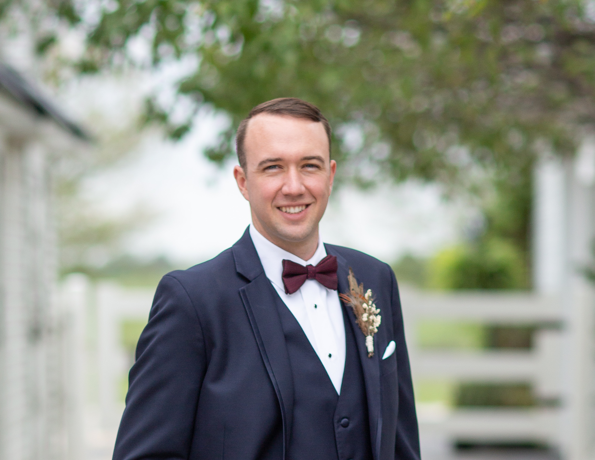

About Me

I grew up in Winona, Minnesota and attended college at the University of Kansas. I've served the
citizens of Overland Park as a police officer for the last 5 years. During that time, I received several
merit-based awards and commendations, including being named Officer of the Quarter in 2018.
As a full-stack developer I have earned experience across the range of the most current and relevant coding
languanges for both front-end and back-end web development. I enjoy working on a team to solve complex and
dynamic problems in my current role, and am looking forward to those same challenges as a web developer.
I believe technology has the power to make our lives easier. I want to use my skills, knowledge, and
creativity to make websites and applications more intuitive and efficient.